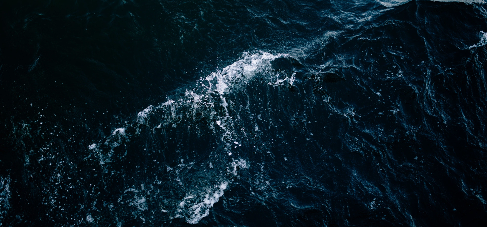

Originally published on the Atlas Obscura online site.
July 21, 2016.
When you think of swimming in the sea,
do you get a sinking feeling?
Does the thought of what monstrous behemoth might be hiding just beneath the waves fill you with dread? Are you acutely aware that the ocean is the most terrifying place on the planet? Then you might suffer from thalassophobia, the compulsive fear of the sea (or really any deep, dark body of water). But that doesn’t mean you have to live with your fear forever.
Like all phobias, thalassophobia is a fear response triggered by a single, specific stimulus. In this case it’s the mysteries of the depths that can cause someone to have an adverse reaction. Thalassophobia differs from a fear of water itself (hello, aquaphobia), in that what most sufferers focus on what might be hiding below the surface, be that a shark, a sea monster, or simply the vast abyss itself. Those with true thalassophobia can experience extreme symptoms when confronted with large bodies of water, including sweating, shaking, and vomiting, although most people who would identify with the phobia probably just get really scared. Searching for solutions to thalassophobia, or really any irrational fear will direct you almost exclusively to psychologists and hypnotists who can help people get the tools they need to get a grip on what scares them. “A phobia is a little different than a fear, in that it’s an irrational fear,” says Marc Carlin, a consulting hypnotist who specializes in helping people overcome their fears and phobias with a mix of cognitive therapy techniques and hypnotherapy. He has helped people overcome a number of common phobias such as a fear of spiders or snakes or bees. While Carlin admits that he has never treated a patient suffering from thalassophobia specifically, the psychology is much the same as with other fears.
“A lot of our fears are irrational to an extent,” says Carlin. “We create this reality where we think they are real but they’re really not.” For those suffering from a fear of the ocean, there is probably nothing dangerous in the vast majority of open water, but that doesn’t make the danger feel any less real.
In reality, the odds of getting attacked by a malevolent sea creature are exceedingly low. Between 1958 and 2014, there have only been 35 fatal shark attacks in the waters around the United States. But the fear of sharks has become wildly disproportionate, leading to many people’s anxieties about open water. Specifically many people’s fear of the ocean can likely be traced back to a certain movie about a killer shark. “A lot of people can identify with [thalassophobia]. Especially if they grew up the period when Jaws was a big thing on the scene,” says Carlin.
Even though the numbers might not support the fear response associated with thalassophobia, Carlin says that fear of the sea is actually very understandable. “In context [a fear of the sea] is not irrational. It’s primal,” says Carlin. “We all have this fear of darkness because we can’t see and we rely on our vision to protect us. If you shut your eyes and you can’t see, now you have to rely on senses that you don’t normally rely upon.” As he describes it, thalassophobia is related to this very basic emotion. Given the average person’s comparative helplessness in water, and the limitations being in a large body of water puts on our senses, that fear of the dark can easily translate to a fear of the deep.

If you let your
thoughts run wild,
without any control,
they will control you.
Thought Catalog, 2018.
The good news is that for all of the terror the oceans might hold, that fear is not an impossible obstacle to overcome. In fact, according to Carlin, the truly phobic might have an easier time getting past their worries than those who just think it’s unsettling. “A true phobic response is learned in an instant,” he says. “But because we learn it very quickly, we can unlearn it very quickly. Sometimes a fear might take a number of sessions.
A true phobic response can be done in like 5-10 minutes.” Since most of the normal fears people harbor that keep them safe while navigating the world were learned over time and repetition, training them out of people is equally challenging. A phobia is an intense emotional response, usually related to a single memory, be it an object or experience. The actual steps to overcoming thalassophobia can differ from person to person, but in general Carlin counsels taking it step-by-step. “If your challenge is a fear of the water, [I want] to give you a way to access a safe and secure feeling,” he says.
“I want to give you the ability to access that feeling, where you can turn it on as an act of will. Then gradually bring you into more challenging situations.” This can be achieved by finding out what experience triggered your fear, and slowly facing it with more and more confidence, hopefully with the emotional tools provided by a therapist or a hypnotherapist, until the experience, and the larger fear is no longer such an impediment.There are no hard numbers on how many people suffer from thalassophobia, or just a real fear of the ocean, but as some indication, the Reddit group devoted to the phobia currently has over 88,000 subscribers (not a recommended destination for anyone suffering from true thalassophobia).
Most sufferers of this fear probably take the easy way out and just stick to dry land where all the giant squid, Nessies, and nightmare sharks can’t touch them. But for those still need to heed the siren call of the seas, a little hypnotism never hurt. As Carlin told us, “If you let your thoughts run wild, without any control, they will definitely control you.”
Thalassophobia is a fear of the ocean or deep dark water. Jerome London, October 5th, 2018.